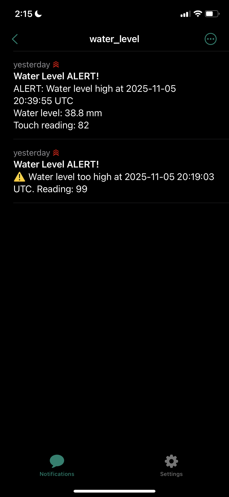
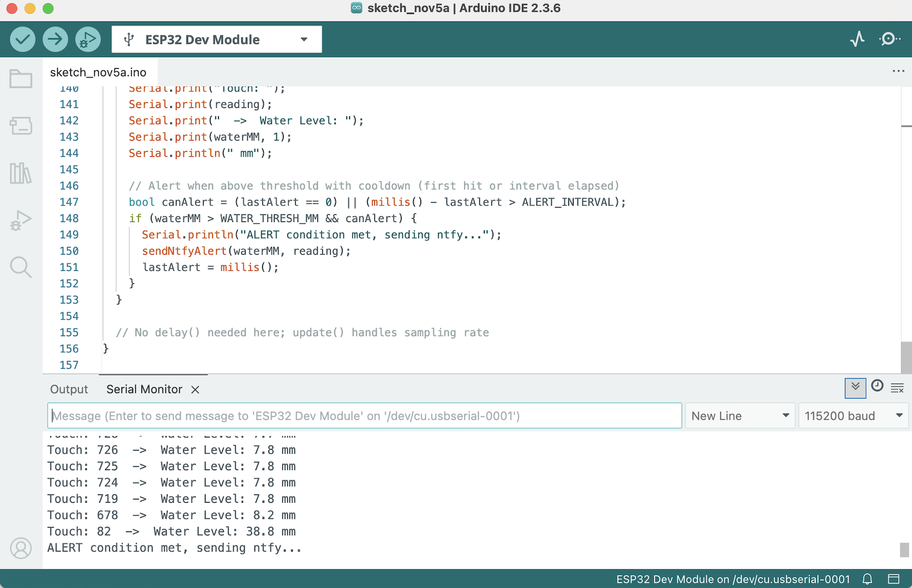

<div class="textcontainer">
<p class="margin"> </p>
<h3>Week 9: Radio, WiFi, Bluetooth (IoT)</h3>
<p class="margin"> </p>
<div class="flexrow">
<a id="btn" href="wk9.zip" download>Download my files from this week!
</a>
</div>
<p class="margin"> </p>
<h4>Assignment: [Program something with IOT]</h4>
<p>This week, I added Wi-Fi capabilities to my water level capacitative sensor. Inspired by the smart freezer project, the goal was to send real-time
alerts to my phone when the water level rose past a set threshold. I experimented with several notification methods. At first, I started by looking into IFTTT since from some rough online research, it seemed like one of the simplest methods.
Unfortunately, after creating an account, I realized that the capabilities I needed would require a pro subscription. Then, I attempted to try the T-Mobile email-to-SMS gateway to convert Gmail alerts into text messages, but I wasn't able to receive any of the emails sent to my phone number. TMobile filters likely flagged them as spam or they've begun to phase the service out.
</p>
<p>Eventually, I switched to ntfy, a free and open-source push notification service that connects directly to the ESP32 over HTTP. In addition to sending an alert when the water level rises above 30mm, I also added a timestamp by connecting the
board to an NPT server. So in-app, each alert will have the timestamp as well as the observed water level. It ended up being both cleaner and faster
than the SMS approach. In the future, I’d love to expand this into a custom mobile app that can log data, visualize sensor trends,
and manage thresholds directly—making the system a fully integrated IoT platform rather than just a single alert channel.</p>
<p>I don't think it's possible to download Arduino sketches, but I've uploaded some screenshots of my code here, as well as the nfty alert message.</p>
<p></p>
<p></p>
</div>